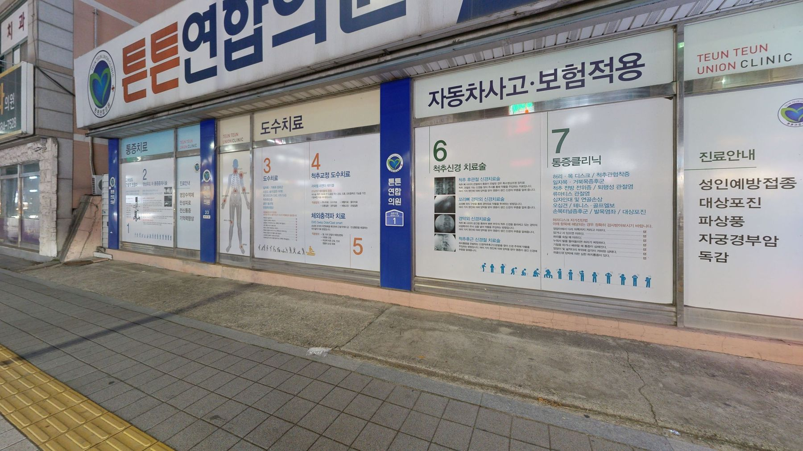
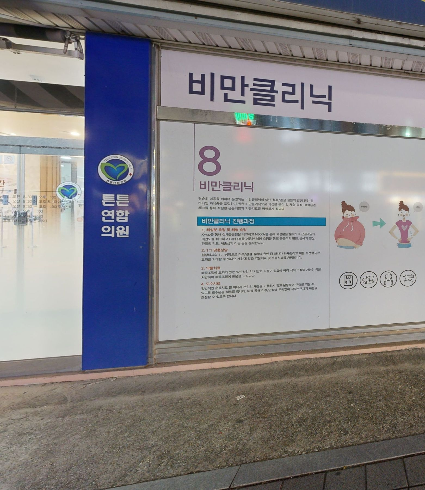
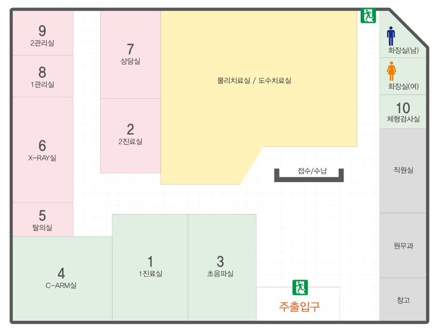

Location
찾아오는 길
충남 천안시 서북구 직산읍 삼은3길 1
삼은리 76-5, 1층
- 이정표
- 롯데리아 삼거리 대각선. 직산읍행정복지센터에서 약 100m.
- 주차
- 건물 뒤편 무료주차.
Exterior
건물 외관



Floor Plan
1층 안내도

Location
충남 천안시 서북구 직산읍 삼은3길 1
삼은리 76-5, 1층
Exterior


Floor Plan
